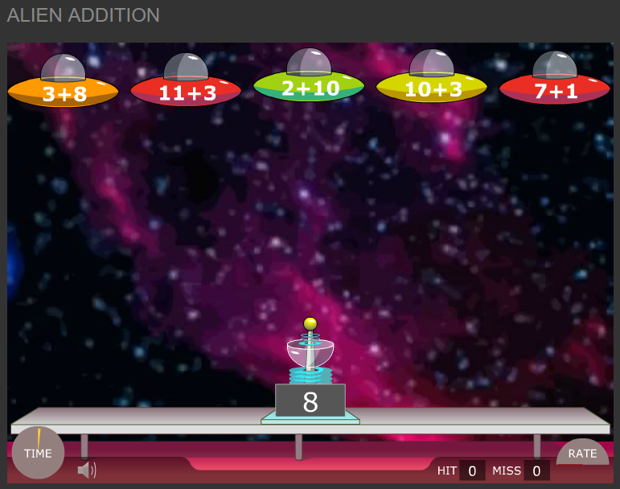

Videojuegos y matemáticas
No podíamos dejar un curso de Matemáticas y TIC sin hacer referencia a los videojuegos.
Videojuegos de contenido matemático
Distinguiremos entre videojuegos de contenido matemático, con una orientación claramente didáctica, de aquellos videojuegos más generales, diseñados para el entretenimiento, pero a los que también se les puede sacar jugo.
Los que encontramos en la web de Arcademics (http://www.arcademics.com) son un claro ejemplo de los del primer tipo. Se juegan online y tienen actividades desde primaria (incluso últimos años de infantil) hasta el primer ciclo de secundaria. Hay algunos, como el Alien Addition de la imagen, que se juegan en modo individual y otros, que suelen ser carreras, que se juegan en modo multijugador.
Los individuales también pueden jugarse en la pizarra digital, por equipos, de manera que todos colaboren a identificar el resultado correcto. Por ejemplo, en Alien Addition hay que disparar a la nave que lleva escrita la operación cuyo resultado aparece en el láser. Con lo cual, estamos repasando las tablas de la suma o haciendo cálculo mental, si los números son mayores. Aviso que los niños suelen emocionarse mucho si jugamos en la pizarra, y es posible que haya que calmarlos. Por otro lado, si disponemos de minis o de una sala de informática, las carreras de patitos o coches que se juegan en modo multijugador son muy divertidas, a la vez que sirven para afianzar operaciones formales. En las carreras, la velocidad del coche (o el patito...) depende de que vayamos haciendo bien las cuentas.

Videojuegos en general
Como muestra del contenido matemático subyacente en muchos de ellos, así como de sus posibilidades didácticas, dejamos aquí enlaces a los artículos de Lluís Albarracín en la revista Suma.
Para saber más (referencias)
Albarracín, L. (2015). Jugando con el espacio y el tiempo. Suma: Revista sobre Enseñanza y Aprendizaje de las Matemáticas, 76, 80, 79-85.
Albarracín, L. (2015). La creatividad hecha videojuego: Minecraft. Suma: Revista sobre Enseñanza y Aprendizaje de las Matemáticas, 79, 35-42.
Albarracín, L. (2015). Diseñando ciudades en SimCity. Suma: Revista sobre Enseñanza y Aprendizaje de las Matemáticas, 78, 65-71.
Albarracín, L. (2014). Los videojuegos de defensa de torres. Suma: Revista sobre Enseñanza y Aprendizaje de las Matemáticas, 77, 61-67.
Albarracín, L. (2014). Los videojuegos de gestión deportiva: FX Fútbol 2.0. Suma: Revista sobre Enseñanza y Aprendizaje de las Matemáticas, 76, 75-82.